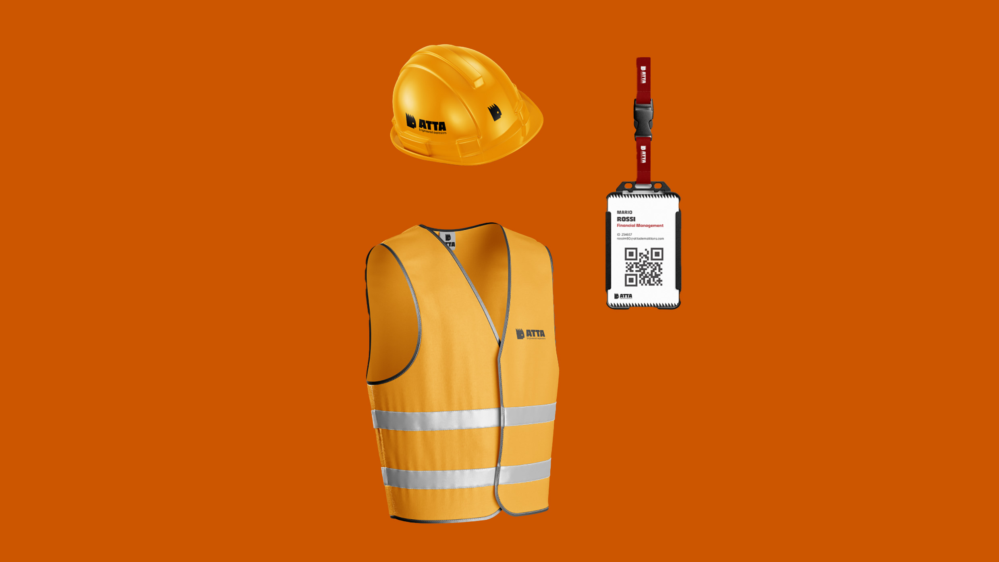
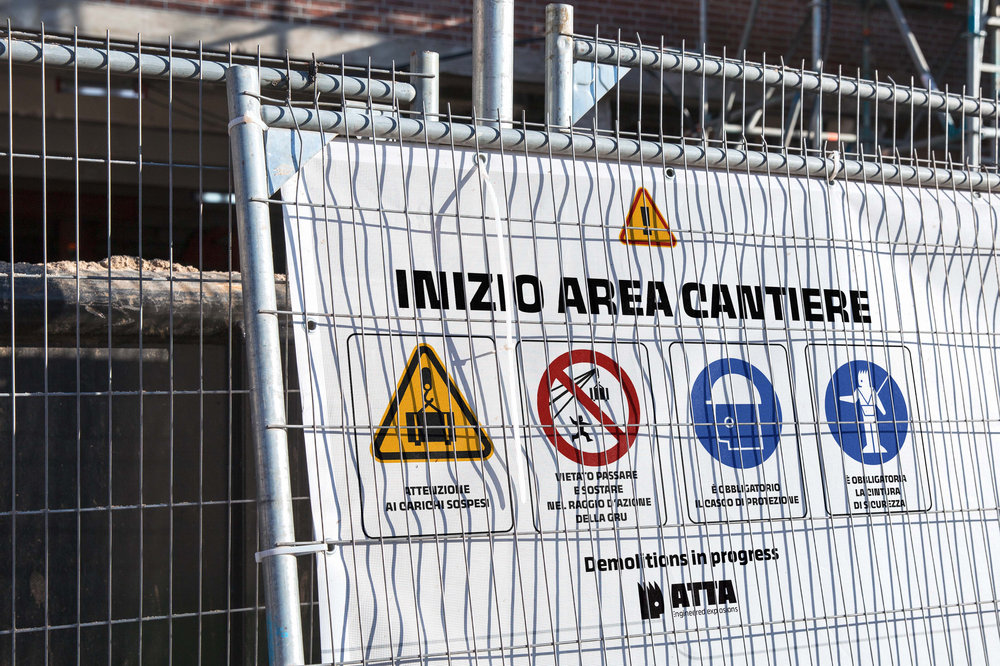
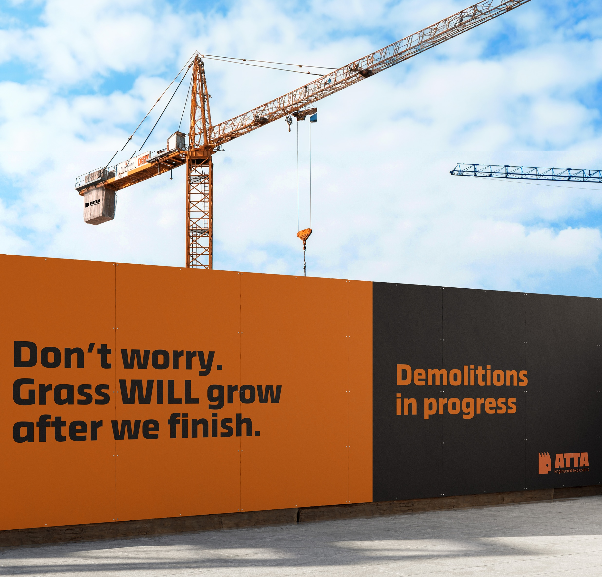
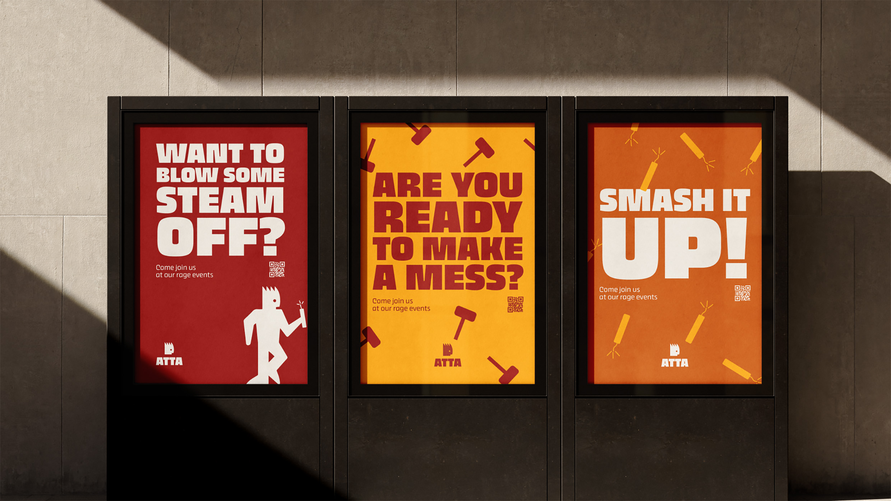
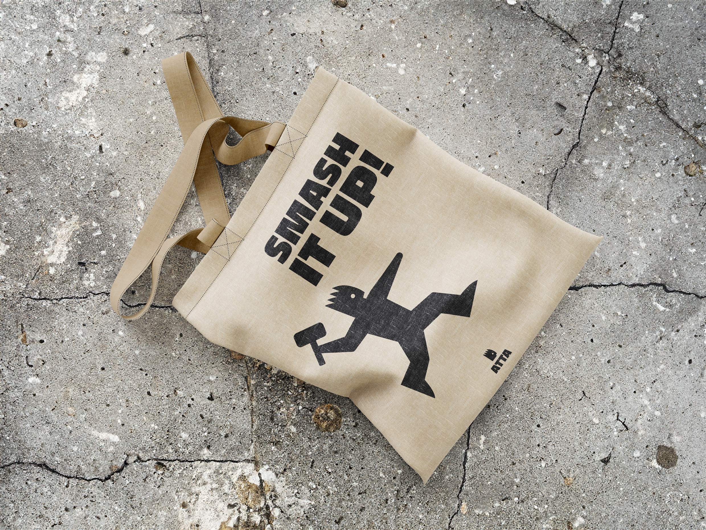
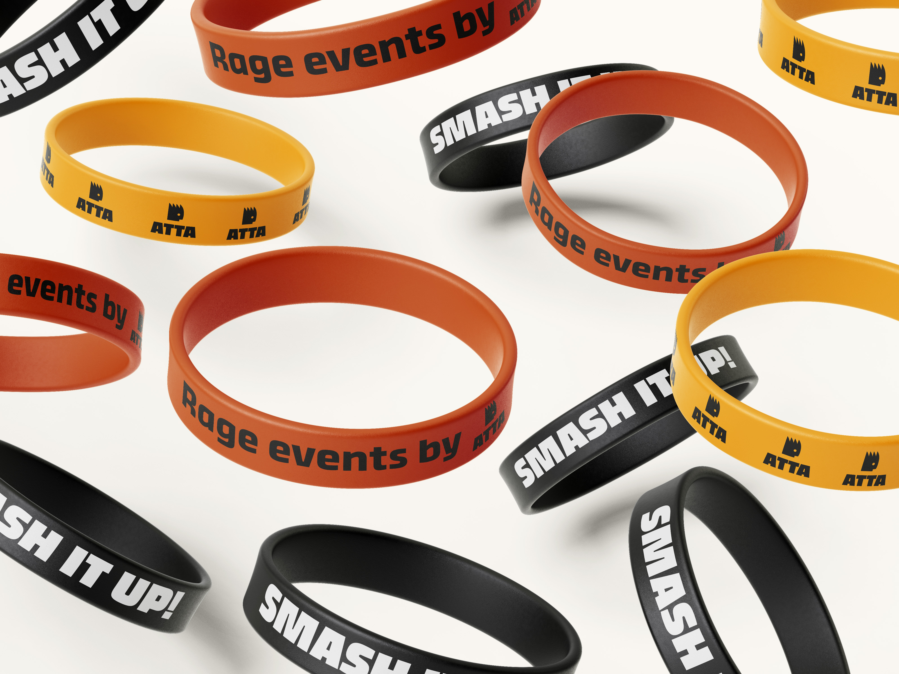

Atta Demolitions
Atta is a brand operating in the building demolition sector, developed based on the personality of Attila.
The visual identity is built around bold colors, strong typography, and Atty, the mascot designed to represent the brand. Atty is applied across all touchpoints: from stationery and office materials to site signage, as well as communication campaigns and merchandise.
The brand personality combines the precision of a serious and reliable company with a playful and irreverent communication style, expressed in specific contexts.
Starting from the brand architecture, all touchpoints between Atta and its audience were developed, designing across space, packaging, editorial, and digital design. The Brand Manual, Brand Reel, and various physical and digital applications were also created.








Credits: Alice Colombo, Emma D'Ancona, Chiara Sisto, Francesca Zannoni.